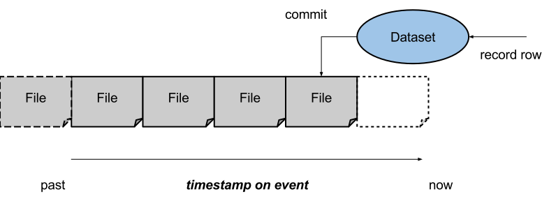

The continuous dataset is used in MLDB to model a continuous stream of data, for example that collected from a pixel or a log file. It is the primary means of collecting data (as opposed to loading data already stored elsewhere) with MLDB.
This is a lower-level primitive that other, higher level functionality can be built on top of.
The continuous dataset models a stream of events, with each event
occuring on a point on a timeline (the timestamp field). The continuous
dataset records events as they come in into an internal dataset, and
every so often (or when commit is called) the internal dataset is
written to files on disk.

The recorded files can then be queried by timestamp, and combined into a dataset that can be processed with MLDB as normal.
Warning: The only timestamp that is processed by the continuous dataset is the timestamp on the recorded rows. The current system time is not used anywhere. In other words, if you record a timestamp from 1980 in 2015, then it will be processed as if it occurred in 1980.
continuous DatasetsA recordable continuous dataset is created using the continuous dataset
type. To create a view of a time window of a continuous dataset, the
continuous.window dataset is used (see below).
A new dataset of type continuous named <id> can be created as follows:
mldb.put("/v1/datasets/"+<id>, {
"type": "continuous",
"params": {
"metadataDataset": <OutputDatasetSpec>,
"createStorageDataset": <Procedure>,
"saveStorageDataset": <Procedure>,
"commitInterval": <TimePeriod>
}
})with the following key-value definitions for params:
| Field, Type, Default | Description |
|---|---|
metadataDataset | Dataset used to store metadata in |
createStorageDataset | Procedure that will create a dataset for storage |
saveStorageDataset | Procedure that will save a storage dataset returning metadata |
commitInterval | Interval between auto-commit operations |
Querying a continuous dataset will query ONLY the live data stream that has not yet been committed. Note that this is a live view, and so results may change from one query to another. For this reason queries should be limited to lookups of rows by row name. In particular, analytical queries will likely fail due to different sub-queries returning non-consistent results due to data being recorded in the middle.
continuous.window DatasetsTo create a view over historical data in a continuous dataset, it is
necessary to use the continuous.window dataset type. This allows
for a time range to be specified, as well as a filter on the metadata
of datasets to be loaded.
A new dataset of type continuous.window named <id> can be created as follows:
mldb.put("/v1/datasets/"+<id>, {
"type": "continuous.window",
"params": {
"metadataDataset": <Dataset (read-only)>,
"from": <Date>,
"to": <Date>,
"datasetFilter": <string>
}
})with the following key-value definitions for params:
| Field, Type, Default | Description |
|---|---|
metadataDataset | Dataset used to store metadata in |
from | Earliest date to include within the dataset |
to | Latest date to include within the dataset |
datasetFilter | Filter to apply to dataset metadata when choosing datasets |
The following section describes the design and implementation of the continuous dataset, to aid in understanding of how to implement advanced use-cases.
The continuous dataset builds on top of four core MLDB features to implement its functionality:
commit, and does not require
high performance (it is written once per commit, and queried
when a dataset is loaded). The metadata dataset is a standard
MLDB dataset. If an ACID dataset is used (eg, the sqlite.sparse
dataset), then the continuous dataset inherits its consistency,
availability and durability.createStorageDataset configuration
parameter. This procedure should return a JSON response
containing a config field that specifies a dataset config
that can be loaded by MLDB to create the dataset.saveStorageDataset
configuration parameter. This procedure will be passed the
ID of the dataset to be saved in the datasetId argument,
and returns a JSON object with two fields: metadata, which is
a JSON object that will be recorded to the metadata dataset
as user metadata, and config, which is a dataset configuration
object that can be used by MLDB to load the saved dataset
in the future.The continuous dataset can record up to 500,000 events per second on a large server if they are presented in small batches of 1,000 events or so. The actual speed depends upon the following characteristics:
beh.mutable dataset type is slow when recording real-valued variables.If a client-server database (like postgresql) is used as the metadata dataset, then it is possible for multiple MLDB instances to share a continuous dataset. In particular,
continuous datasets can share a distributed metadata dataset, which
will allow them to all contribute data to the continuous dataset.continuous.window dataset can point to a distributed metadata dataset,
which will allow each of them to query over the entire window.Note that issues of data distribution will need to be addressed at
the application level. For example, loading up a continuous.window
dataset that queries data stored in multiple geographic locations may
be slow and expensive due to bandwidth cost and limitations. In that
case, it may be better to tag the datasets with geographical location
and load them up in separate distributed MLDB instances, distributing
the query at the application level.
The metadata is written in a sparse format, and so requires a dataset that supports sparse queries.
The metadata dataset contains three main sets of data:
earliest and latest column which
describes the time range of data that is present in the file.md.. Any user-supplied
data can be provided here. For example, if there was a separate
continuous dataset recording to the same metadata database for each
country, then the md.country field might be recorded into the
metadata database. This would allow a continuous.window dataset to
be constructed that only contained data from given countries.commit is only called just before the
dataset is saved. For most datasets, this means that on a crash of
MLDB, all data that hasn't finished saving will be lost. A write-
ahead log will be added in a further release to protect against
this eventuality.beh.binary.mutable dataset type dataset type implements all
of the functionality required to be reliably used with MLDB.Here is a sample configuration of the createStorageDataset procedure.
The JS source of the procedure is:
// Create a binary behaviour dataset to save into
var config = { type: "beh.binary.mutable" };
var dataset = mldb.createDataset(config);
// Construct our output, which has a `config` parameter to pass back
var output = { config: dataset.config() };
// Return our output
output;
And the saveStorageDataset procedure is:
// This is the URI we save our dataset to
var uri = "file://mydata/" + new Date().toISOString() + ".beh";
// The REST address for the dataset
var addr = "/v1/datasets/" + args.datasetId;
// Call its save route
var res = mldb.post(addr + "/routes/saves", { dataFileUrl: uri });
// Log the result of the REST call
mldb.log(res);
// Construct our response to return to MLDB, with our
var output = { metadata: mldb.get(addr).json.status, config: res.json, metadata: { country: 'france' } };
// Return the result as the output of the procedure
output;
Putting it together, we construct our continuous dataset as follows
mldb.put("/v1/datasets/recorder", {
"type": "continuous",
"params": {
"commitInterval": "1s",
"metadataDataset": {
"type": "sqliteSparse",
"id": "metadata-db",
"params": {
"dataFileUrl": "file://mydata/metadata.sqlite"
}
},
"createStorageDataset": {
"type": "script.run",
"params": {
"language": "javascript",
"scriptConfig": {
"source": "<as above>"
}
}
},
"saveStorageDataset": {
"type": "script.run",
"params": {
"language": "javascript",
"scriptConfig": {
"source": "<as above>"
}
}
}
}
})
And a configuration to read data recorded in the last 3 days is
mldb.put("/v1/datasets/window", {
"type": "continuous.window",
"params": {
"metadataDataset": {
"id": "metadata-db",
},
"from": "<3 days ago in ISO8601 format>",
"to": "<now in ISO8601 format>"
}
})
beh.mutable dataset type allows files
of the given format to be created.